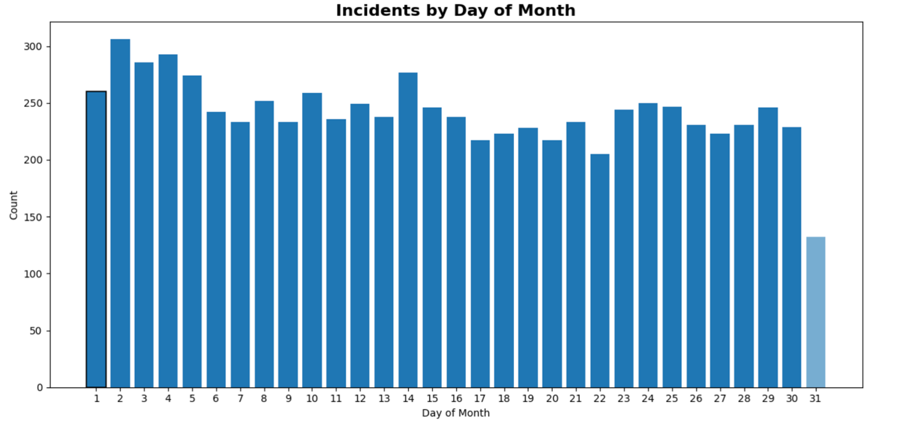

I started the analysis by reviewing the dataset on its own, checking for gaps and unusual patterns.
From there, I compared across multiple dimensions—time, geography, substances, and demographics—to address three guiding questions.
Q1: How have yearly overdose deaths changed over time, and what share involve fentanyl?
Motivation: Having grown up in Philadelphia, I’ve seen how fentanyl reshaped the overdose crisis. Since moving to Pittsburgh, I want to understand whether Allegheny County has experienced a similar trajectory, with fentanyl emerging as a central driver of fatalities.
The substances most frequently mentioned in overdose cases. Duplicate and inconsistent labels (e.g., “Fentanyl,” “Cocaine; Fentanyl,” and bracketed entries)
created data quality challenges. Related entries were consolidated and ambiguous categories grouped to reveal the true distribution.
Incidents grouped into major drug families. Fentanyl and other opioids dominate, followed by stimulants. Alcohol and benzodiazepines appear less frequently but remain meaningful contributors.
Breaking down “Other / Adjuncts” shows prescription and over‑the‑counter drugs that contribute to incidents (e.g., antidepressants, sedatives, acetaminophen). Individually smaller, collectively significant.
Overdose incidents by year. Relatively steady through 2013, then a sharp rise starting 2014 with a peak in 2017.
Levels remain well above pre‑2014. The most recent year is partial and shaded to indicate caution in interpretation.
Seasonality
Incidents remain relatively steady across the calendar year, with modest peaks in April and August and slightly fewer events in January/November.

Distribution by day of month. A spike on the 1st likely reflects defaulted/missing dates; the 31st is lower since not all months include it.
Q2: Where are the geographic hotspots, and how often do incidents occur away from home ZIP codes?
Motivation: In Philadelphia, recognized hotspots shaped resource placement (e.g., Narcan distribution). I examine whether Allegheny County shows similar concentration.
County‑wide overview of incidents by ZIP code, revealing clear clustering in certain communities.
Refining ZIP alignment sharpens local variation, highlighting concentrated risk in specific neighborhoods.
Emphasizing disparity: 15210 records the highest count, while 15261 reports none—underlining an uneven burden across the county.
Repeated hotspots appear across substance families. Fentanyl/opioids show the largest clusters; stimulants and others are more diffuse but persistent.
Q3: Which demographic groups (age and race) have been most affected in recent years?
Motivation: Public discussion often emphasizes disproportionate impacts on certain groups and spread into younger cohorts. Here, I examine local patterns.
Fatal overdoses are most concentrated among adults 25–34, with heavy burdens among 35–44 and 45–54.
Youth (<25) and older adults (65+) remain comparatively lower.
Deaths are overwhelmingly among White residents, surging through the mid‑2010s and remaining elevated into the early 2020s.
Black residents show a parallel upward trend with increases after 2018 and peaks around 2020–2021.
Conclusion
Fatal overdoses in Allegheny County escalated dramatically over the past decade, with fentanyl emerging as the dominant driver since the mid‑2010s.
Incidents are geographically concentrated—often in central and river‑adjacent ZIPs—and frequently involve multiple substances.
The crisis falls most heavily on working‑age adults (25–44), with men and White residents comprising the largest shares, alongside growing impacts among Black residents in recent years.
These patterns point to an epidemic that is concentrated and complex—geographically, demographically, and across substances—and argue for targeted, community‑specific responses.